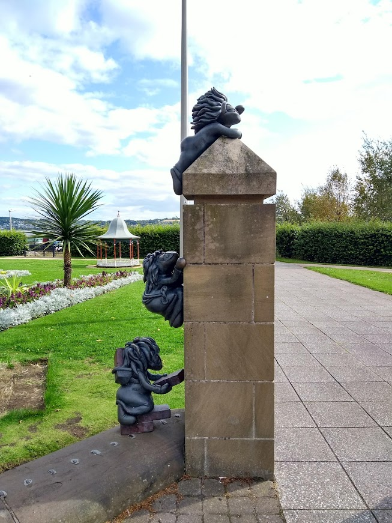

This city in the east coast is well known for a variety of important cultural and historical events. In 2018, the V&A Musuem was opened to the general public. This was a very important moment for Dundee as the V&A is the first design musuem in Scotland and currently the only other V&A Musuem in the whole world, with the first one being in London.3 But that isn't the only important cultural landmark in Dundee, we also have the RSS Discovery, a ship that resulted in Dundee being known as "The City of Discovery". 4 You can learn more about this ship that has been all the way to the Antartic on our essential experiences page alongside some other essential Dundee experiences.
|  |
|---|
The city is also well known for the three J's. 5 You can learn more about Dundee's three J's on our history page. Dundee is also where two world famous video game series: "Grand Theft Auto" and "Lemmings" originated.6 There is even a Lemmings statue in Dundee, why don't you try and find it? Dundee has also been home to some very famous people. Ricky Ross of "Deacon Blue" fame (known for hit singles such as "Real Gone Kid", "Dignity" and "Chocolate Girl")8 was from Dundee 7 Brian Cox9 who is well known for both his work with the Royal Shakespeare. who is well known for both his work with the Royal Shakespeare. Company and also his roles in various hit films and tv shows such as "Braveheart", "Red Dwarf" and "Pixels".10
Dundee is also home to DC Thomson & Son Ltd which produces various magazines, comics and newspapers such as: Danger Mouse, The Sunday Post, Bunty and Mandy.11 William Mcgonagall (known as one of the worst poets in the world) wrote multiple poems about Dundee including one about the Tay Bridge Disaster and another about the Tay Whale12 (more can be learnt about both of these on our history page). In 2017, Dundee tried to win the UK City of Culture Award and lost to Hull.13